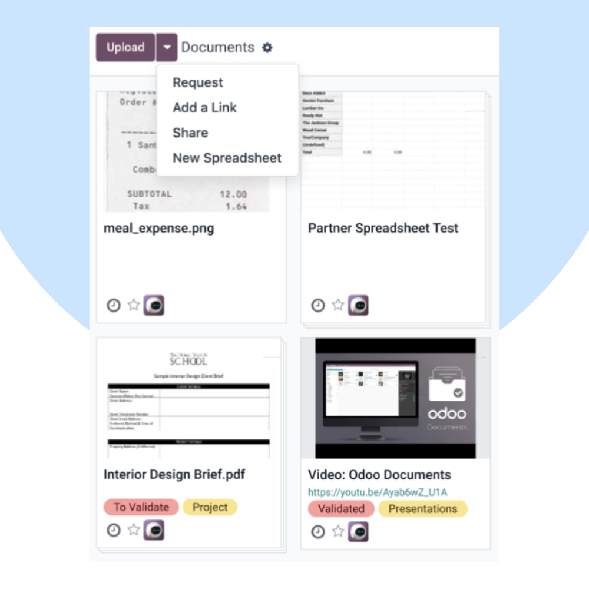
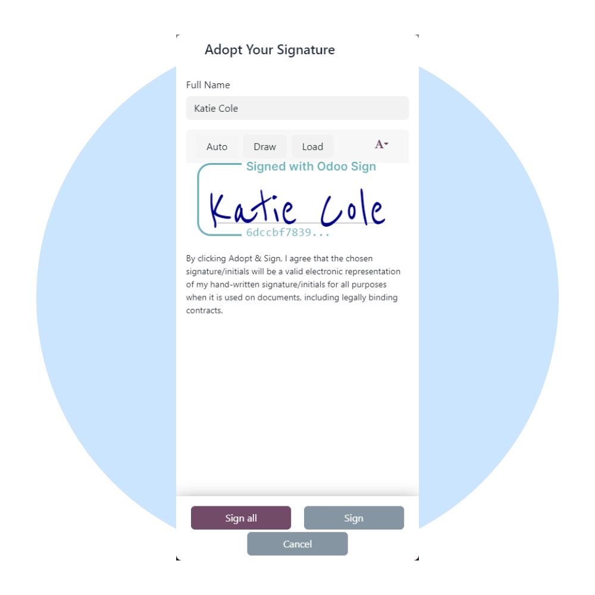
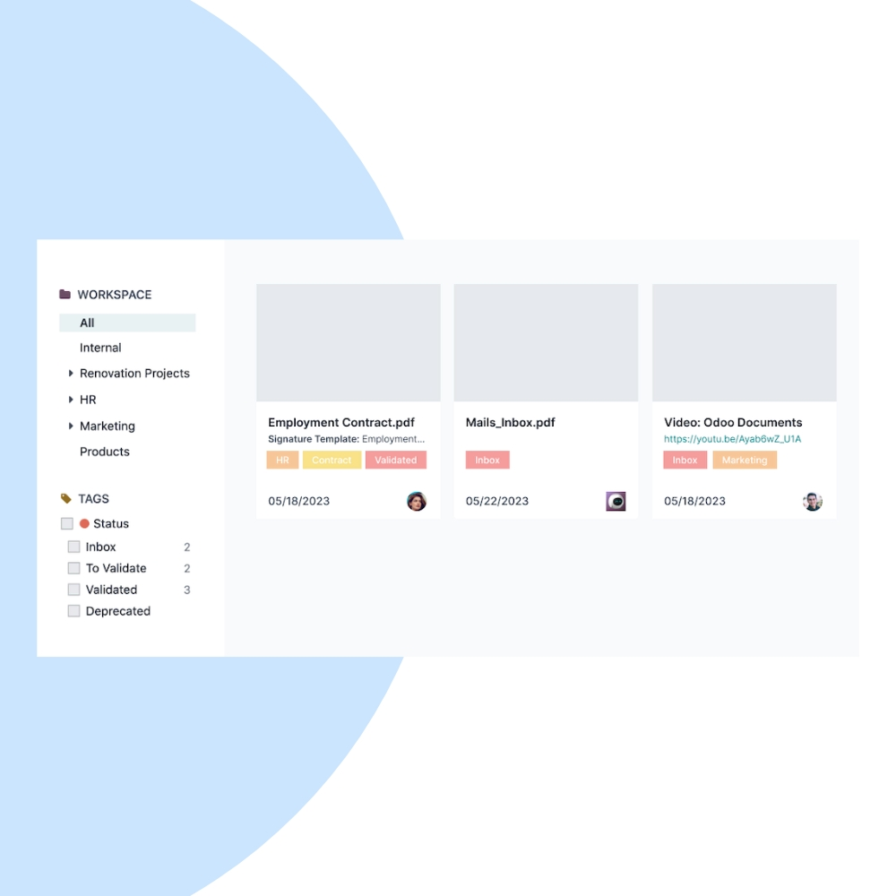

Centralize, organize, and automate your business documents with Odoo Documents. We help you manage contracts, invoices, HR files, and operational documents with complete control and security.
We configure Odoo Documents to match your business structure, departments, and compliance needs. Automate document routing, approvals, and storage across your organization.


Our implementation ensures your documents are organized, searchable, secure, and fully integrated with your daily business operations.
Store all business documents in one secure location.
Find documents instantly using tags and filters.
Route documents automatically for approval and processing.
Track changes and maintain document history.
Control document access with role-based permissions.
Link documents directly to invoices, employees, and records.
We help you continuously improve document governance, compliance, and efficiency as your business scales.
